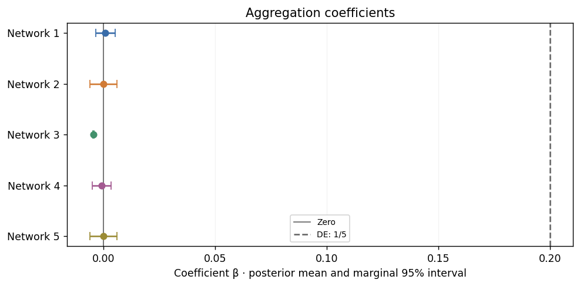
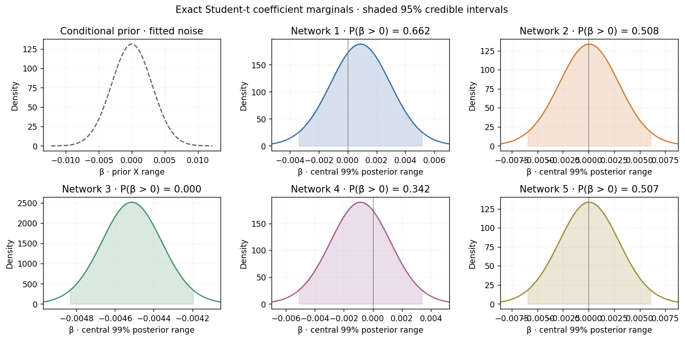
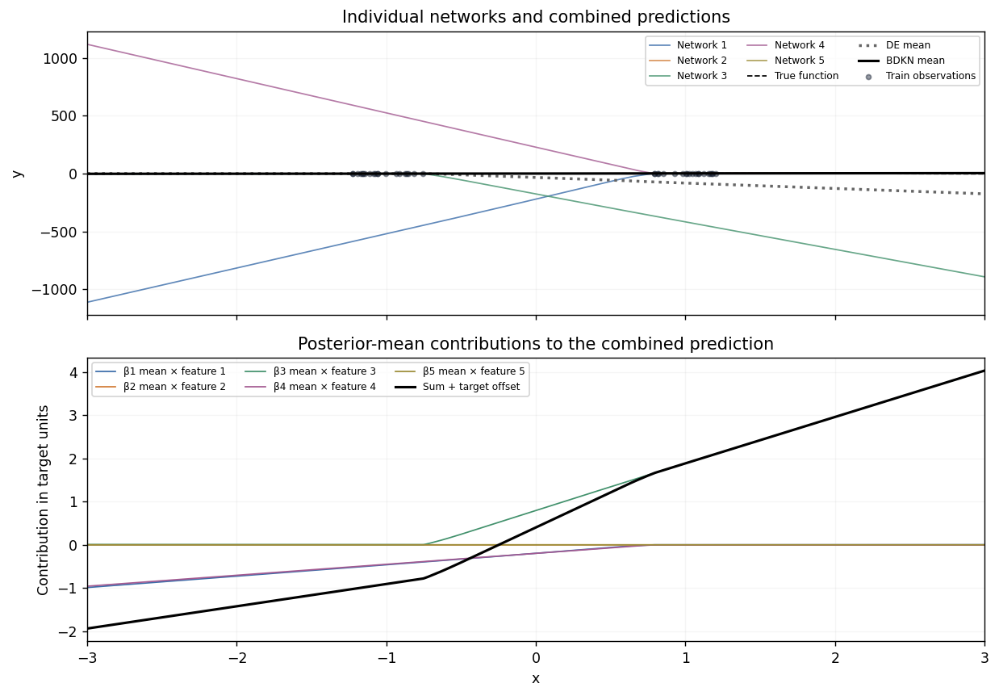
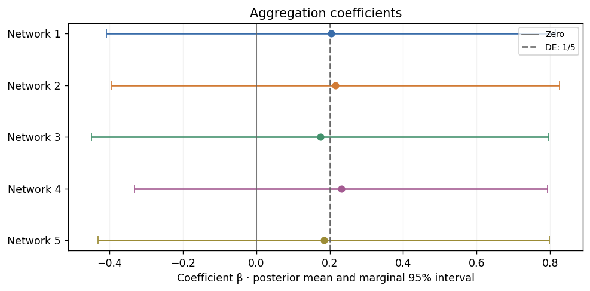
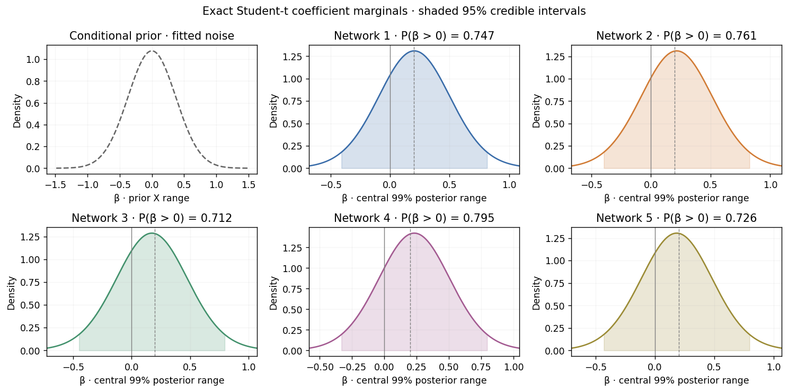
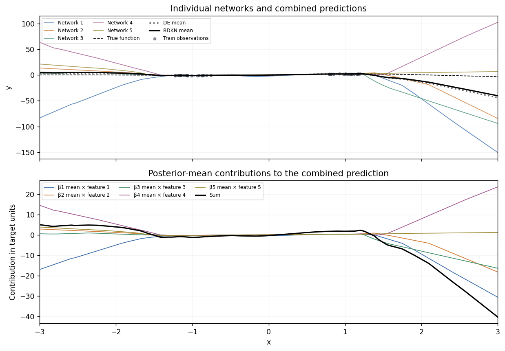
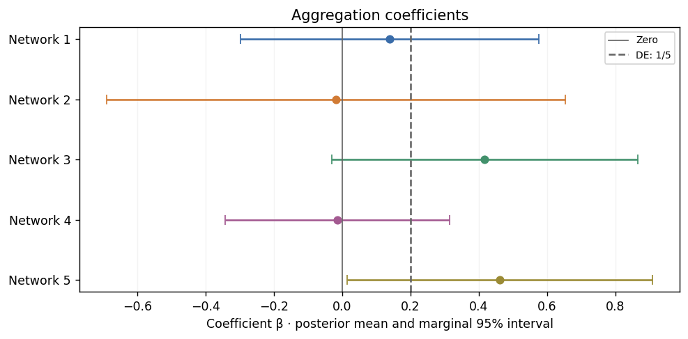
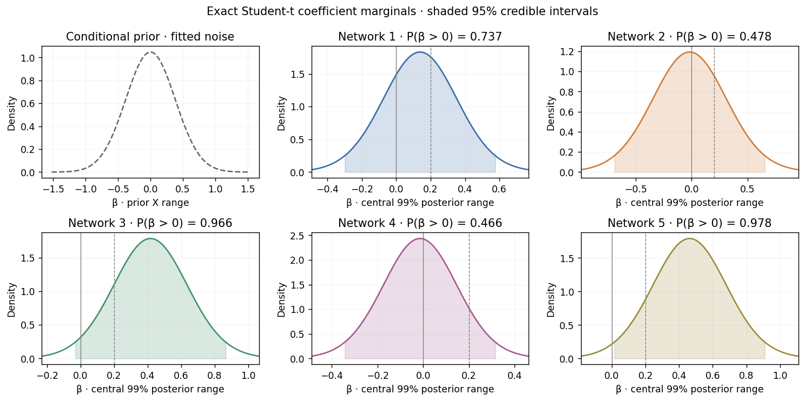
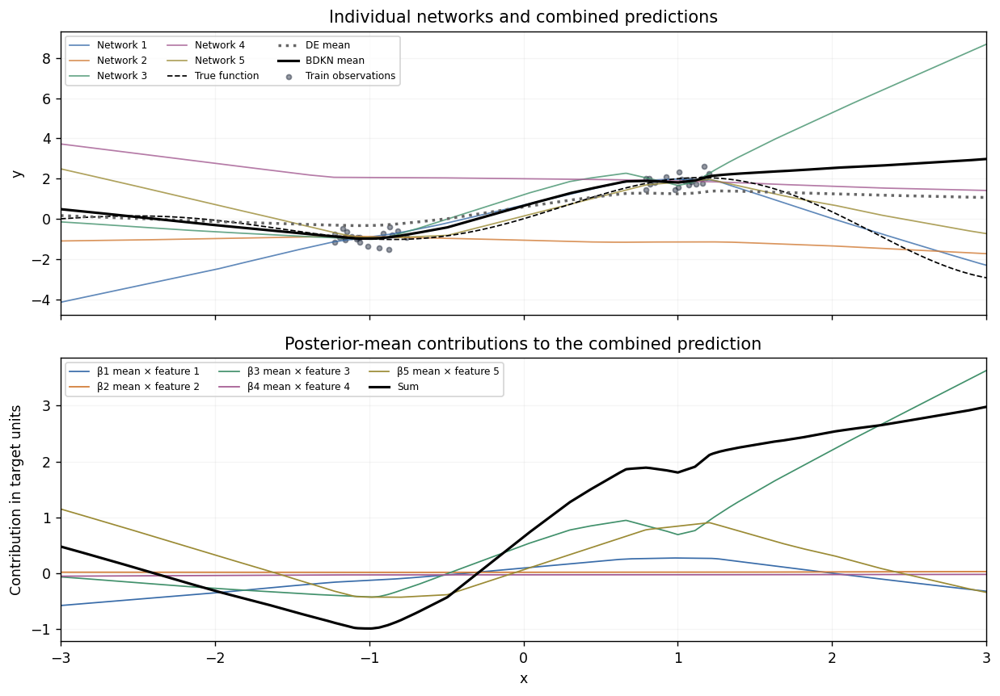

Regression comparison
Download resultsAggregation weights
Coefficients can be negative and need not sum to one. Intervals describe coefficient uncertainty; the dashed reference is DE’s fixed 1/H weight.
BDKN


Each density panel uses its own X range for readability; coefficient intervals above share a common axis. Prior reference conditions on fitted noise. Contribution shares use held-out inputs; test targets are used only for scoring.
| Network | β mean | 95% low | 95% high | P(β > 0) | Contribution share | Test RMSE | Test NLL |
|---|---|---|---|---|---|---|---|
| 1 | 0.21696 | -0.49120 | 0.92513 | 0.73035 | 0.17700 | 2.18420 | 209.95203 |
| 2 | 0.08393 | -0.61020 | 0.77806 | 0.59590 | 0.06140 | 2.03148 | 169.38755 |
| 3 | 0.20692 | -0.48031 | 0.89416 | 0.72686 | 0.23265 | 3.31554 | 985.68460 |
| 4 | 0.27844 | -0.40889 | 0.96578 | 0.79111 | 0.30558 | 3.01797 | 517.36540 |
| 5 | 0.21214 | -0.48923 | 0.91351 | 0.72777 | 0.22337 | 3.07438 | 730.92977 |
Functional repulsion · BDKN



Each density panel uses its own X range for readability; coefficient intervals above share a common axis. Prior reference conditions on fitted noise. Contribution shares use held-out inputs; test targets are used only for scoring.
| Network | β mean | 95% low | 95% high | P(β > 0) | Contribution share | Test RMSE | Test NLL |
|---|---|---|---|---|---|---|---|
| 1 | 0.00089 | -0.00337 | 0.00514 | 0.66209 | 0.15417 | 493.37935 | 397.02672 |
| 2 | 0.00006 | -0.00594 | 0.00606 | 0.50806 | 0.00005 | 2.38463 | 556.61279 |
| 3 | -0.00451 | -0.00483 | -0.00420 | 0.00000 | 0.69549 | 420.35060 | 16.90633 |
| 4 | -0.00086 | -0.00508 | 0.00337 | 0.34232 | 0.15024 | 497.01899 | 11.34427 |
| 5 | 0.00006 | -0.00594 | 0.00605 | 0.50749 | 0.00005 | 2.44519 | 187.47964 |
Weight repulsion · BDKN



Each density panel uses its own X range for readability; coefficient intervals above share a common axis. Prior reference conditions on fitted noise. Contribution shares use held-out inputs; test targets are used only for scoring.
| Network | β mean | 95% low | 95% high | P(β > 0) | Contribution share | Test RMSE | Test NLL |
|---|---|---|---|---|---|---|---|
| 1 | 0.20343 | -0.40812 | 0.81499 | 0.74737 | 0.34603 | 48.28490 | 86.35314 |
| 2 | 0.21589 | -0.39440 | 0.82619 | 0.76061 | 0.14195 | 21.44348 | 27.98332 |
| 3 | 0.17395 | -0.44814 | 0.79603 | 0.71243 | 0.17209 | 31.26338 | 820305.02472 |
| 4 | 0.23131 | -0.33133 | 0.79396 | 0.79452 | 0.28971 | 35.52549 | 32.67220 |
| 5 | 0.18360 | -0.43020 | 0.79739 | 0.72555 | 0.05023 | 7.21613 | 11248143.84609 |
First-order repulsion · BDKN



Each density panel uses its own X range for readability; coefficient intervals above share a common axis. Prior reference conditions on fitted noise. Contribution shares use held-out inputs; test targets are used only for scoring.
| Network | β mean | 95% low | 95% high | P(β > 0) | Contribution share | Test RMSE | Test NLL |
|---|---|---|---|---|---|---|---|
| 1 | 0.13866 | -0.29852 | 0.57584 | 0.73742 | 0.12191 | 1.50893 | 26.51124 |
| 2 | -0.01811 | -0.68980 | 0.65358 | 0.47841 | 0.01218 | 1.66041 | 20.85857 |
| 3 | 0.41734 | -0.03084 | 0.86552 | 0.96644 | 0.60530 | 3.82740 | 1219.03030 |
| 4 | -0.01382 | -0.34266 | 0.31501 | 0.46636 | 0.01705 | 2.48673 | 3.28273 |
| 5 | 0.46238 | 0.01506 | 0.90971 | 0.97845 | 0.24357 | 0.97150 | 14.54071 |